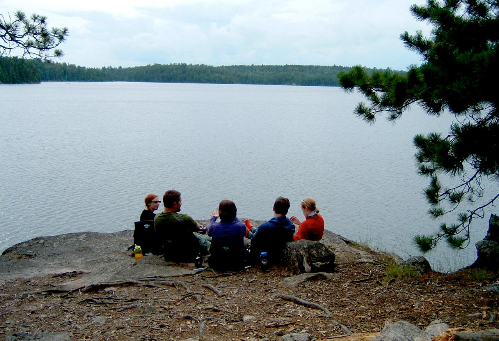

SUMMARY
Conservation Minnesota is a Non-profit organization based in Minnesota, focused on protecting and conserving the Water, Land, and other Natural Resources found in Minnesota. One main way Conservation MN helps communities is by getting the community to agree on how each individual can help support the conservation of resources. And, as it states on their website, it\'s working!
Click on the links in the sidebar to explore more!
